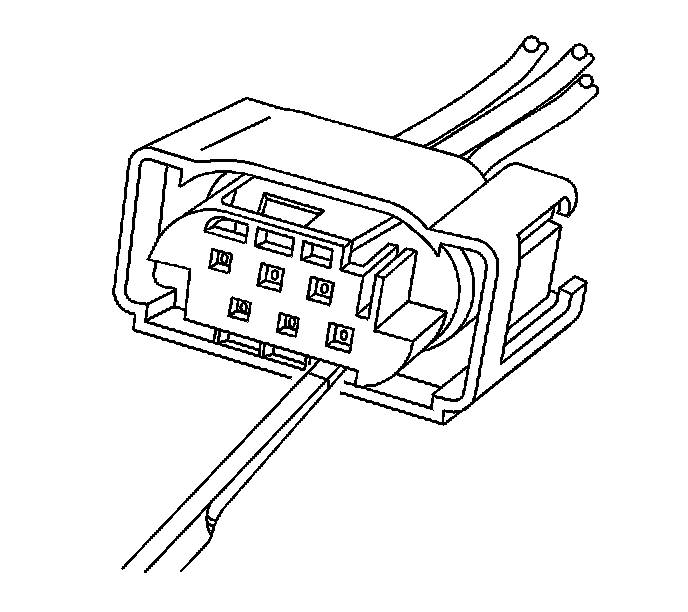
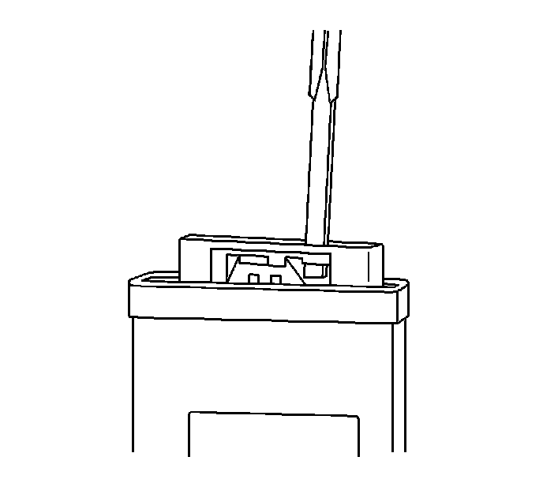
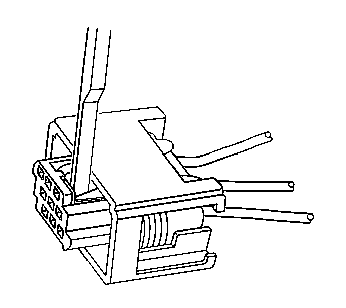

Tyco/AMP Connectors (Sensor)
TYCO/AMP CONNECTORS (SENSOR)
TOOLS REQUIRED
J-38125 Terminal Repair Kit
TERMINAL REMOVAL PROCEDURE
1. Disconnect the connector from the component.

2. Insert the J 38125 11A (GM P/N 12094430) tool into the cavity on the lower right hand face of the connector until the terminal release tang access panel slides over.

3. Ensure that the terminal release tang access panel is in the correct location to access the terminals.
4. Push the wire side of the terminal that is being removed toward the connector and hold it in position.

5. Insert the J 38125 11A (GM P/N 12094430) into the terminal release tang access slot located behind the access panel of the connector and press down on the terminal while carefully pulling the terminal out of the connector. Always remember never use force when pulling a terminal out of a connector. If the terminal is difficult to remove, repeat the entire procedure.
TERMINAL REPAIR PROCEDURE
Use the appropriate terminal and follow the instructions in the J-38125.